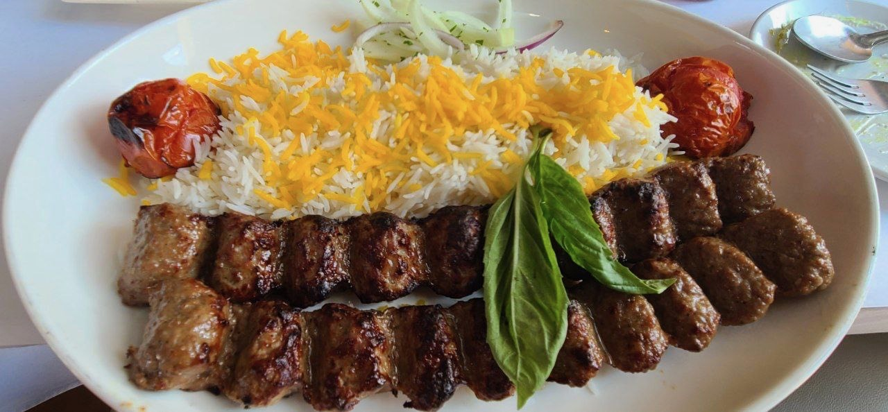
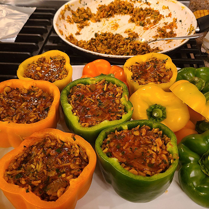
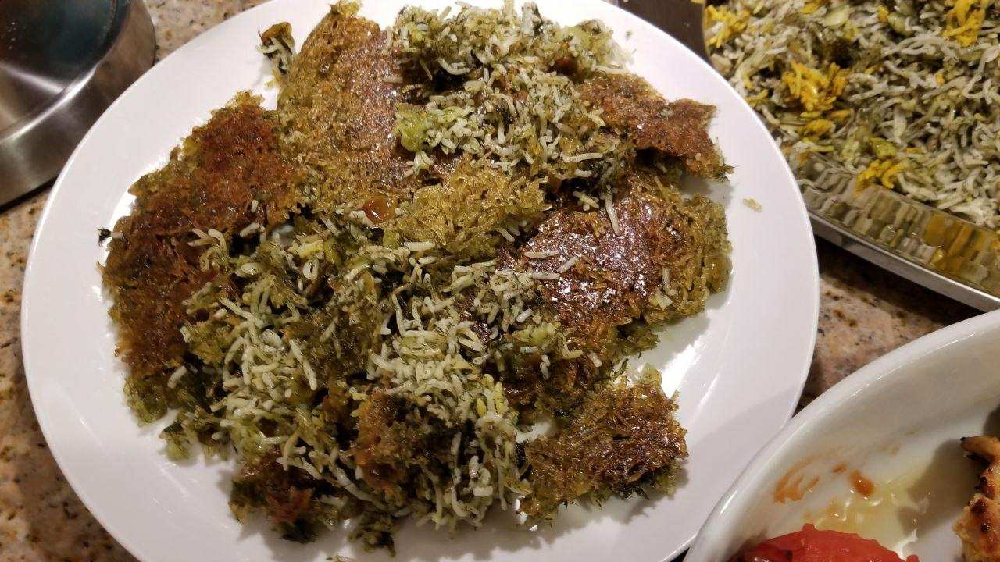
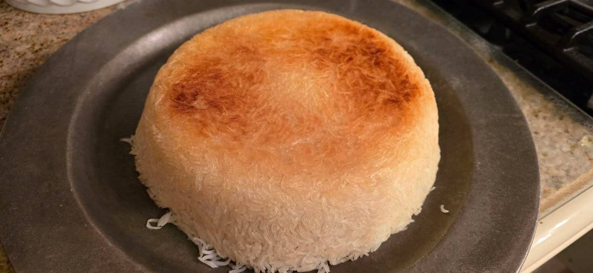

Home
Recipes
Bazaar
About

Marianne's Kitchen
Dinner Is Served
Recipes
Khoresh & Stuffed Peppers

Khoresh
Stuffed Peppers
The Base and Basics
Recipes
Rice & Tahdig


Tahdig (rice)
Tahdig (potato)